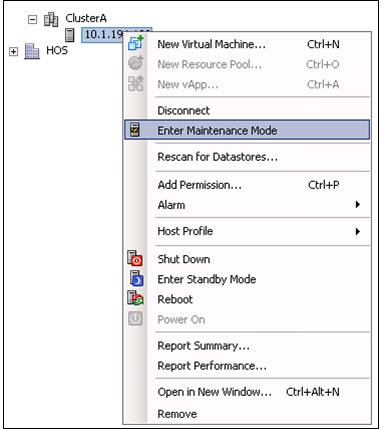
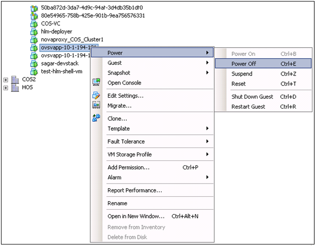
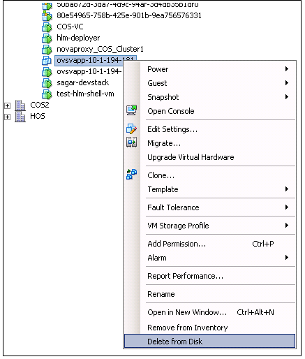
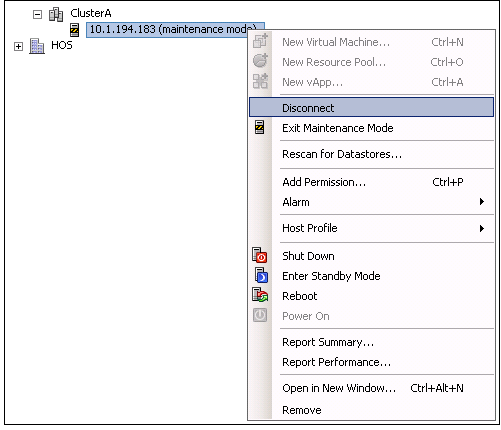

This topic describes how to remove an existing ESX host from a cluster.
Note: Before
performing this procedure, wait until VCenter migrates all the tenant VMs to other active
hosts in that same cluster.
- Right-click and put the host in the maintenance mode. This will automatically migrate
all the tenant VMs except OVSvApp.

- Cancel the maintenance mode task.

- Right-click the ovsvapp VM (IP Address) node, select Power, and then click
Power Off

- Right-click the node, and then click Delete from Disk.

- Right-click the Host, and then click Enter Maintenance Mode.
- Disconnect the VM. Right-click the VM, and then click Disconnect.
